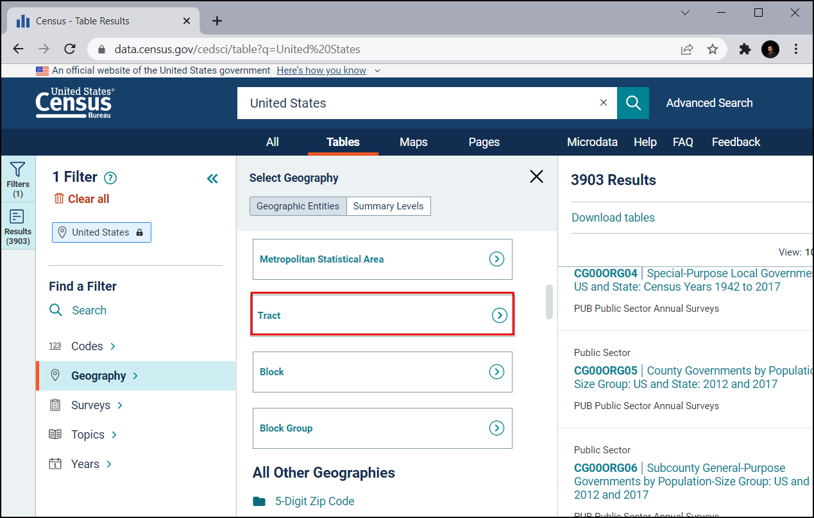
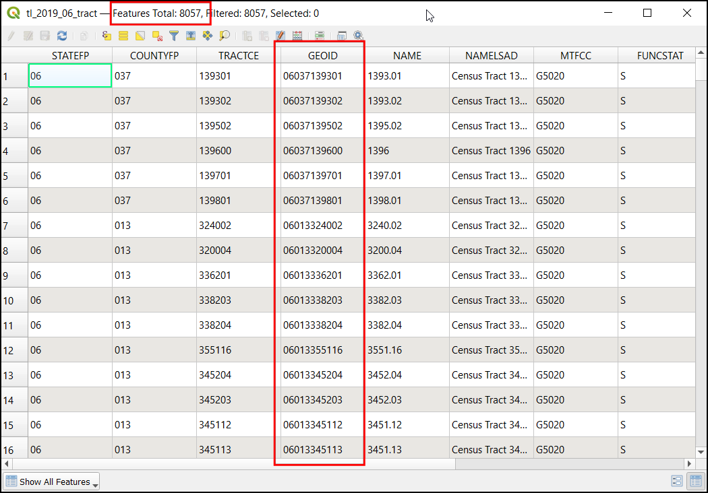
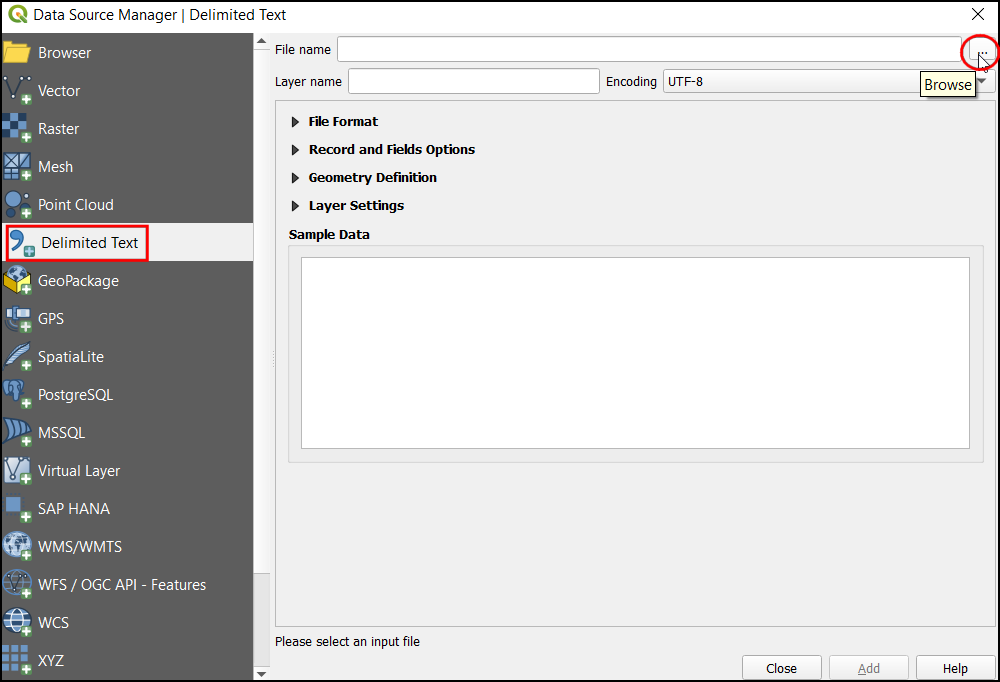
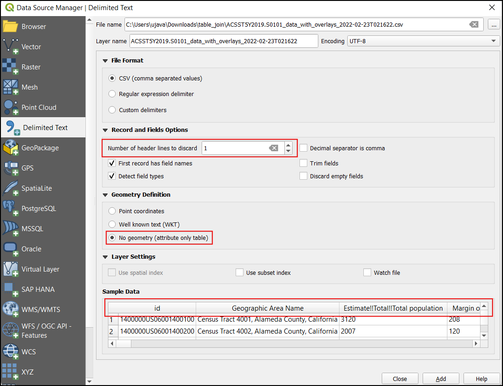
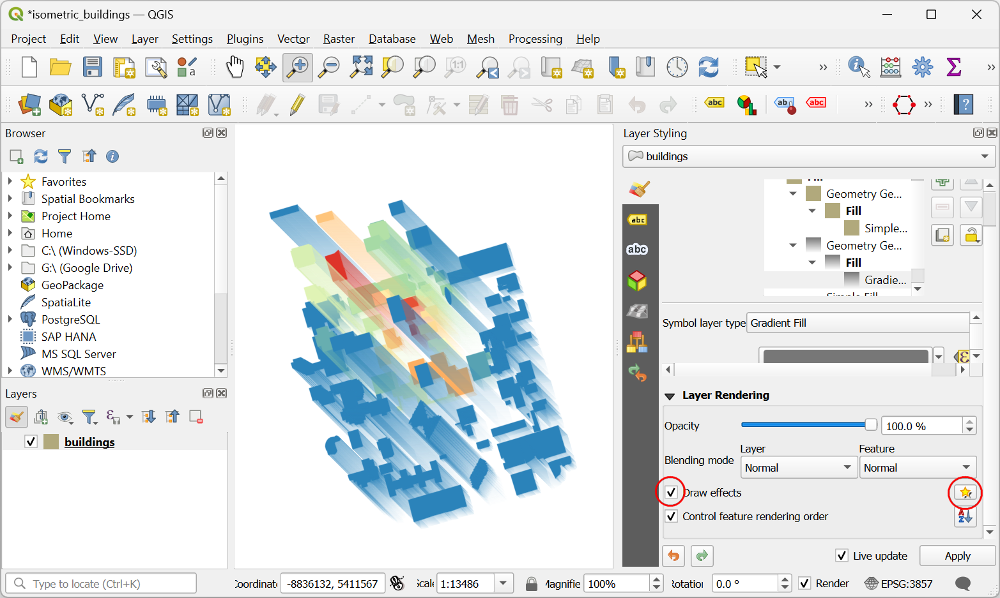
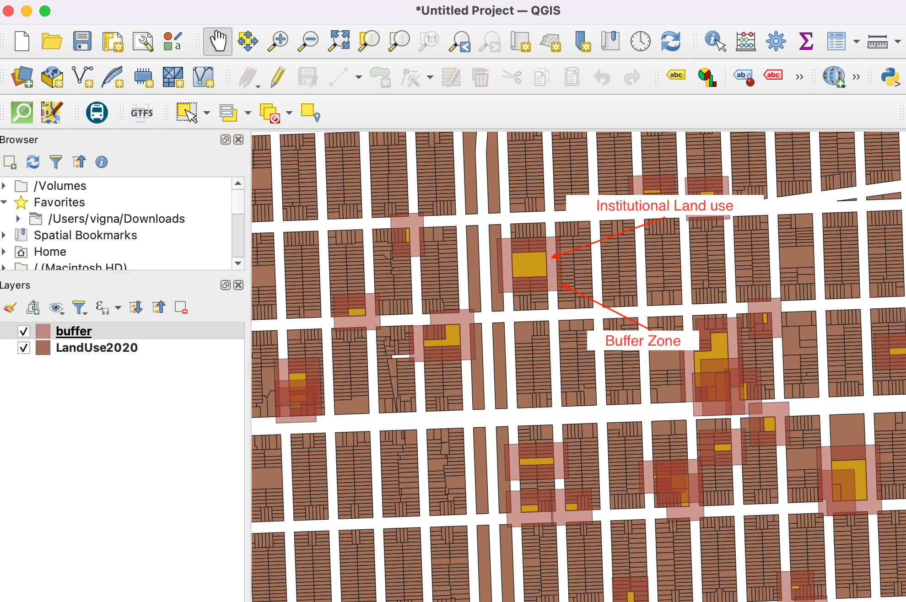

資料表連接 (QGIS3)¶
Not every dataset you want to use comes in a spatial format, and often the data would come as tabular data like CSV, TSV, or spreadsheet. You need to link it with the existing spatial data for use in your analysis. This operation is known as the Table Join and is done using the Join attributes by field value from the Processing algorithm Toolbox.
內容說明¶
We will use a shapefile of census tracts for California and a population data table from US Census Bureau to create a population density map for California.
你還會學到這些¶
Loading a CSV files that do not contain any geometry in QGIS.
Eliminate additional headers in CSV.
Add an additional column to a layer.
Style an layer with transparent stroke.
取得資料¶
We want to prepare a population density map for the state of California, USA. We will first get a table with population counts for each census tract in the state.
Download Census Table¶
Visit US Census Bureau and click VIEW TABLES.

Click on the Filters icon in top-left.

Let’s first filter to California. Click on Geography.

Click on Tract, which can provide the census tract information.

Choose California.

Check All Census Tracts within California. This allows us to download all information as a single file instead of downloading it separately for each tract. Now that we have set the geography, click on Topics.

Under Select Topics, choose Population and People.

Check the Population and People. Now we have selected all the necessary filters. Close the filter window.

In the Download tables pane scroll down to find S0101 | AGE AND SEX

This will open a detailed view of the data. We are concerned with only the population hence un-select the Margin of Error so we can get the necessary information only and save on file storage space.

Click on the Download button.

The selected data is available for multiple years and using different estimation techniques. The ACS 5-Year Estimate Subject Tables is recommended as multi-year estimates increases the reliability of the data. It also has no data gaps and contains information for all tracts. Select the year
2019. and click Download. This will download a zip file. Once it finishes, unzip it on your local disk.

Download Census Tract Boundaries¶
To create a map from the census table, we also need the boundaries representing each census tract in the state of California.
Visit TIGER Line Shapefiles and click Web Interface.

Under Select year choose
2019, in Select a layer typeCensus Tractsand click Submit.

Select
Californiain Select a State and click Download. This will download a zip file containing the vector files.

為了方便起見，你也可以直接用下面的連結下載這兩份資料集：
資料來源 [TIGER] [USCENSUS]
操作流程¶
Locate the
tl_2019_06_tract.zipfile in the QGIS Browser and expand it. Select thetl_2019_06_tract.shpfile and drag it to the canvas.

The Select Transformation dialog will prompt to convert from EPSG:4269 to EPSG:4326. This dialog presents several transformations to convert between the coordinates between these projections. Leave the selection to the default choice and click OK.

You will see the layer
tl_2019_06_tractloaded in the Layers panel. This layer contains the boundaries of census tracts in California. Right-click on thetl_2019_06_tractlayer and select Open Attribute Table.

Examine the attributes of the layer. To join a table with this layer, we need each feature’s unique and common attribute. In this case, there are 8057 individual tract records with the
GEOIDfield. This column can link this layer with any other layer or table containing the same ID.

To load the tabular data, click on Open Data Source Manager.

In the Data Source Manager dialog, choose Delimited Text. Then in the right, click on the
...next to File name and browse to the unzipped folder with the California population CSV.

Now under Sample Data, we can inspect the data even before loading it as a layer. The representation shows that the data table contains 2 header rows.

To eliminate the additional header row, under Record and Fields Options set the Number of header line to discard to
1. Now the table will contain proper column headers. Since this layer contains only tabular data, selectNo geometry (attribute only table)under Geometry Definition. Click Add to add it as a layer and then click Close to close this dialog box.

The CSV will now be imported as a table to QGIS and appear as
ACST5Y2019.S0101in the Layers panel. Now right-click on the layer and select Open Attribute Table.

The
IDcolumn contains the unique id for each record, which can be used to join this table with thetl_2019_06_tractlayer. If you compare the values of theIDwith theGEOIDcolumn from thetl_2019_06_tract. you will notice that it is prefixed with 1400000US. To merge these two tables successfully, the values must match exactly. Let’s remove this prefix and add a new column with the last 11 characters which contain the value that is an exact match.

To create a new column with the last 11 digits, open the Processing Toolbox by going to , and search and locate the algorithm.

In the Field calculator dialog, select
ACST5Y2019.S0101as the Input layer, entergeoidin Field name, and selectstringin Result Field type. Now search forsubstrin expressions. We can use this function to extract the required part from the id field.

Enter the below expression. We use the substr function and extract the value from position -11 (negative value is counted from the end). The final result can be viewed in the Preview section. Click Run.
substr("id", -11)
Now a new layer
Calculatedwill be loaded in the canvas, lets inspect the attribute table. A new columngeoidwith the value that can be matched with the cencus tract will be present.

To create a table join, open the Processing Toolbox by going to , and search and locate the algorithm.

In the Join attributes by field value dialog, select
tl_2019_06_tractas the Input layer andGEOIDas the Table field. SelectCalculatedas the Input layer 2 andgeoidas the Table field 2. Under Layer2 fields to copy, click on the....

Check
Geographic Area Name,Estimate!!Total!!Total populationandgeoid. Click OK.

Check the Discard records which could not be joined. This will eliminate any extra records in the population table. Click the … button under joined layer to select the output file location and select
Save to File....

Name the output geopackage as
california_total_population.gpkg. Click Run.

Once the processing finishes, verify that the algorithm was successful if all 8057 feature(s) are joined. Click Close.

You will see a new layer
california_total_populationloaded in the Layers panel. At this point, the fields from the CSV file are joined with the census tracts layer. Now that we have the population data in the census tracts layer, we can style it to create a visualization of population density distribution. Click the Open the Layer Styling Panel button.

In the Layer Styling panel, select
Graduatedfrom the drop-down menu. As we are looking to create a population density map, we want to assign different color to each census tract feature based on the population density. We have the population in the Estimate!!Total!!Total population field, and the area field in ALAND. Click Expression button, to compute the percentage of total population in each cencus tract.
備註
When creating a thematic (choropleth) map such as this, it is important to normalize the values you are mapping. Mapping total counts per polygon is not correct. It is important to normalize the values dividing by the area. If you are displaying totals such as crime, you can normalize them by dividing by total population, thus mapping crime rate and not crime. Learn more

Enter the following expression to calculate the population density. The area of the feature is given in square kilometers. We then convert it to square meters by multiplying with
1000000and calculating the population density with the formula Population/Area. Preview the result and click OK.
1000000 * ("Estimate!!Total!!Total population"/"ALAND")
In the Layer Styling Panel, click classify and enter the classes as
10.

Click on the color ramp to choose the color ramp
RdYlGn.

The higher density concerns more so, let’s assign green to lower density and red to high-density areas. Click on the color ramp and choose Invert Color Ramp.

Now we have an excellent looking information visualization of population density in California. To make it better, let’s make the border of each census tract transparent. Click on the Symbol tab.

Click on Stroke color and click
Transparent stroke.

The bins can be adjusted, click on the Values this will popup a dialog to enter the upper and lower bound value.

Once your satisfied close the Layer styling panel. We now have a nice looking information visualization of population density in California.